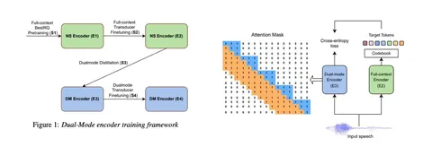
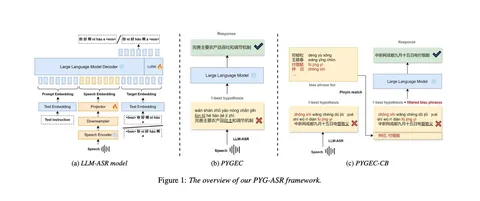
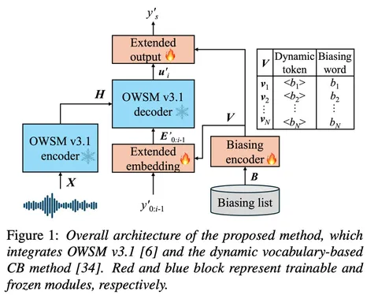

Сегодня делимся подборкой трёх свежих работ по архитектурам и подходам в распознавании речи. Все они так или иначе решают задачу повышения устойчивости и адаптивности моделей.
DuRep: Dual-Mode Speech Representation Learning via ASR-Aware Distillation
Команда из Amazon предложила пайплайн для обучения, который включает несколько стадий. Сначала используется BestRQ pretraining, затем проводится full-context fine-tuning — тут ничего нового. Но дальше начинается интересное: авторы предлагают особый тип дистилляции, по сути дополнительный претрейн, после которого уже выполняется финальная настройка.
Под dual-mode здесь понимается не «аудио–текст», как может показаться, а режим, объединяющий стриминг и full-context. У исследователей есть full-context-энкодер, и они хотят получить dual-mode-энкодер, который можно использовать как претрейн. Для этого применяют кодбук и токенизацию, обучаясь с кросс-энтропийной функцией потерь — почти как в обычном претрейне.
Ключевой нюанс — жонглирование масками. Они рандомизируют как левый, так и правый контексты при обучении, что помогает улучшить качество кодирования.
Для стриминга это работает, потому что модель учится с учителем, имеющим полный контекст, и получает больше информации. Для full-context улучшения можно объяснить тем, что дистилляция с варьирующимися масками предотвращает переобучение: датасет у авторов не слишком сложный, и такая регуляризация помогает повысить общую устойчивость модели.
OWSM-Biasing: Contextualizing Open Whisper-Style Speech Models for Automatic Speech Recognition with Dynamic Vocabulary
Основная идея статьи в том, чтобы к seq2seq-модели добавить biasing list, который позволяет учитывать редкие или специфические слова (например, имена собственные). Редкие слова обычно разбиваются на несколько BPE-токенов, что мешает корректному распознаванию. Чтобы избежать этого, каждое слово из biasing list представляется как единый токен — элемент динамического словаря (<Raphael>, <Nelly> и т.д.).
Выходная матрица логитов расширяется за счёт этих слов, что позволяет модели напрямую предсказывать редкие слова как единые токены. Обучаются при этом только эмбеддинги и, по сути, деэмбеддинги.
Нюанс в том, что при генерации декодеру приходится выдавать такие токены, опираясь только на сигнал от biasing encoder. Это необычно, но при хорошем обучении, вероятно, сработает.
Во время тренировки в biasing list случайно добавляют слова из обучающего набора, чтобы модель училась работать с разнообразными словами.
Pinyin-Guided Chinese Speech Recognition with Large Language Model
Пиньинь — это упрощённая запись китайских иероглифов латинскими буквами (иногда с цифрами, обозначающими тоны). По сути, авторы обучают ASR-модель на базе LLM.
Китайские иероглифы могут произноситься по-разному, и здесь возникает дисбаланс: прозвучало одно, записано другое — модель может путаться. Поэтому авторы предлагают ввести промежуточное состояние: сначала модель выдаёт pinyin-токены, которые напрямую отражают произнесённое, а уже потом конвертирует их в целевые токены — сами китайские иероглифы.
Концептуально интересно, что модель фактически делает нечто вроде ризонинга: не выдаёт результат сразу, а проходит через дополнительный слой осмысления.
Идею можно применять и в других задачах: например, в переводе — сначала генерировать промежуточные слова на исходном языке, затем переводить; в музыке — восстанавливать произнесённые названия треков через промежуточное фонетическое представление; аналогично и с англицизмами — сначала фиксировать звучание, потом корректировать форму.
Евгений Ганкович
